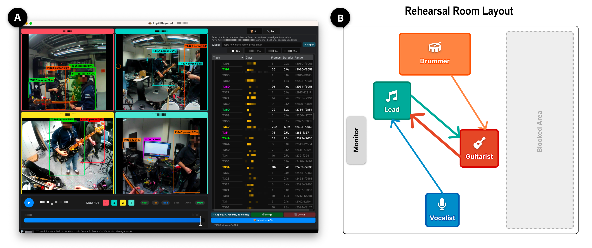

Analyzing Visual Attention Patterns During Band Rehearsal with Mobile Eye Tracking

(opens in new tab)
Venue. ETRA (2026)
Materials.
DOI(opens in new tab)
PDF(opens in new tab)
Abstract. Visual attention is central to ensemble coordination, yet how musicians allocate gaze during naturalistic rehearsal remains poorly understood. We present a pilot study using mobile eye tracking to examine gaze behaviour in a four-member band across three songs, each practiced twice. Musicians wore Pupil Labs Neon eye trackers, and YOLOv8-assisted scene annotations mapped fixations to ensemble members and objects in view. Analyzing fixation matrices, transition matrices, temporal scarf plots, and dwell–transition correlations, we uncover a hub-and-spoke attention topology: the session leader was the dominant gaze target for all members, while the learning guitarist concentrated up to 97% of interpersonal dwell on this single reference. Between attempts, gaze transitions decreased by up to 65% on average for unfamiliar material (up to 82% for individual participants) as scanning stabilized. Scarf plots reveal how teaching breakdowns fragment attention and uninterrupted runs consolidate it. Post-session participant reflections align with the quantitative patterns, and we discuss implications for gaze-aware tools in ensemble pedagogy.
Link to this page: